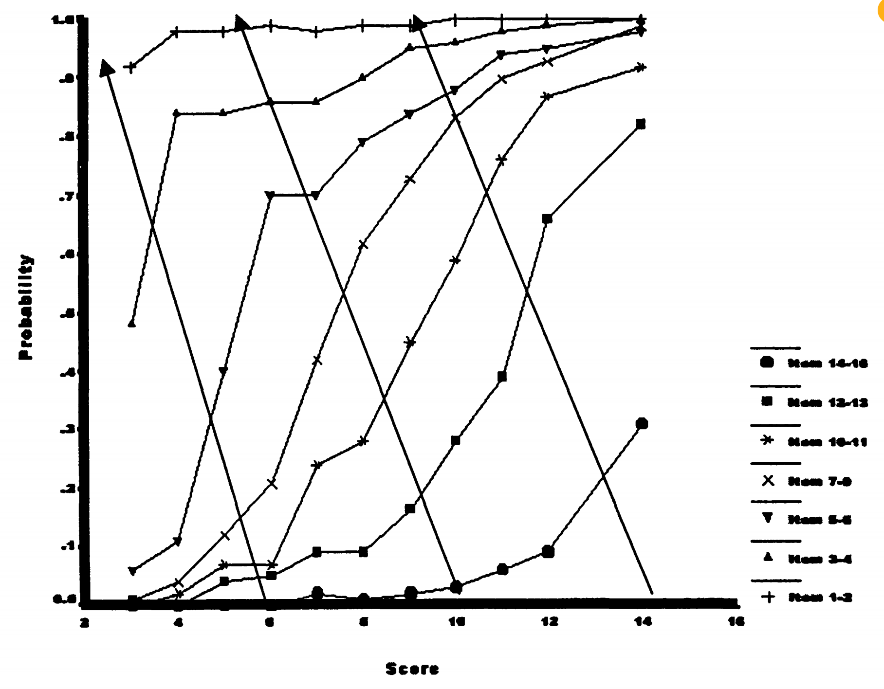
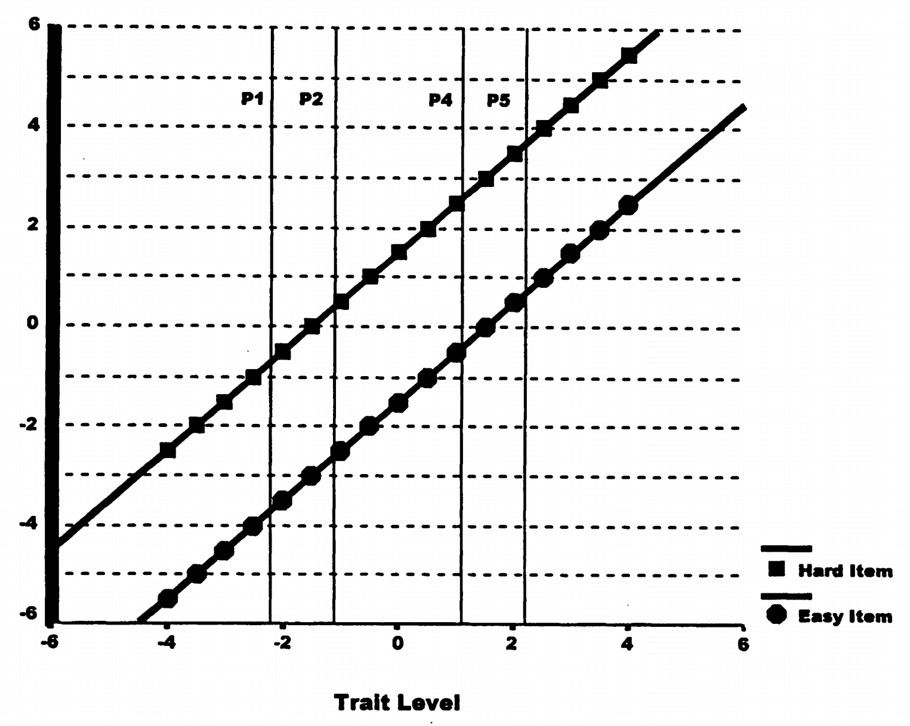

3. 测量量表特性：数字背后的规律¶
3.1 为什么要关心数字的"品质"？¶
当我们拿到测验分数时，经常会进行各种运算：计算平均分、标准差、相关系数等。但是，我们有权利对这些数字进行这些运算吗？
数字运算的合理性问题
假设有三个学生的分数：
- 小明：60分
- 小红：80分
- 小李：100分
我们可以说：
- 小红比小明高20分？✓
- 小李是小明的1.67倍？❓
- 平均分是80分？❓
- 小红的分数正好在小明和小李中间？❓
答案取决于这些分数具有什么样的测量量表特性。
3.2 测量的本质：表征理论¶
在深入讨论之前，我们需要理解测量的根本概念。
表征理论的核心思想
测量的目的： 用数字来表征现实世界中对象之间的关系
基本要求： 数字之间的关系必须反映对象之间的真实关系
举例： 如果物体A比物体B重，那么A的重量数值必须大于B
3.3 四种量表水平：从简单到复杂¶
Stevens (1946) 提出了四种测量水平，每种都有不同的特性。
3.3.1 名义量表：标签的世界¶
基本特征： 数字只是标签，没有大小关系
名义量表的例子
人格障碍类型编码：
- 偏执型 = 1
- 分裂型 = 2
- 边缘型 = 3
关键理解：
- 3 不比 1 "更多"
- 可以随意重新编码：1→99, 2→33, 3→17
- 只要保持类别区分即可
表4.1：人格障碍的名义测量
| 类型 | 分数1 | 分数2 | 分数3 |
|---|---|---|---|
| 偏执型 | 1 | 11 | 1 |
| 分裂型 | 2 | 3 | 1 |
| 分裂样型 | 3 | 4 | 1 |
| 表演型 | 4 | 9 | 2 |
| 自恋型 | 5 | 10 | 2 |
| 反社会型 | 6 | 2 | 3 |
| 边缘型 | 7 | 5 | 3 |
| 回避型 | 8 | 6 | 3 |
| 依赖型 | 9 | 7 | 4 |
| 强迫型 | 10 | 8 | 4 |
| 被动-攻击型 | 11 | 1 | 4 |
注：分数1到分数2的变换保持了类别的独特性；分数3的变换导致了信息损失
允许的统计量： 频数、众数、卡方检验
不允许的运算： 加法、平均数、大小比较
3.3.2 序数量表：排名的世界¶
基本特征： 数字表示顺序，但间距没有意义
序数量表的变换实例
能量唤醒分数的不同变换：
| 人 | 原始分数 | 线性变换 | 非线性变换 |
|---|---|---|---|
| 1 | 2 | 51 | 4 |
| 2 | 4 | 52 | 16 |
| 3 | 6 | 53 | 36 |
| 4 | 8 | 54 | 64 |
| 5 | 10 | 55 | 100 |
关键洞察：
- 线性变换保持相对距离不变
- 非线性变换改变相对距离
- 两种变换都保持排序关系
- 对序数数据，两种变换都是合法的！
允许的统计量： 中位数、百分位数、等级相关
不允许的运算： 加法运算的平均数、标准差
3.3.3 区间量表：距离的世界¶
基本特征： 相等的数值差异代表相等的实际差异
区间量表的核心特性
可加性： 满足额外的特性，使得差异有固定含义
允许的变换： 只有线性变换 (\(aX + b\))
含义： 间距有意义，但比率没有意义
让我们通过详细推导来验证线性变换的特性：
线性变换的验证推导
原始数据： \(X_1 = 6.22\)（均值），\(\sigma_X = 3.07\)（标准差）
线性变换： \(Y = 0.5X + 50\)
变换后的均值和标准差： \(Y_1 = 53.11\)（均值），\(\sigma_Y = 1.53\)（标准差）
验证逆变换是否成立：
非线性变换： \(Z = X^2\)
变换后： \(Z_1 = 47.11\)（均值）
尝试逆变换：
→ 非线性变换下，均值不具备可逆性。
这个例子说明线性变换保持统计关系，而非线性变换会破坏这种关系。
允许的统计量： 均值、标准差、相关系数、t检验
不允许的运算： 比率比较（如"A是B的两倍"）
3.3.4 比率量表：比例的世界¶
基本特征： 有真正的零点，比率有意义
比率量表的特征
真零点： 零值表示属性的完全缺失
允许的变换： 只有乘以常数 (\(aX\))
含义： 可以说"A是B的两倍"
允许的统计量： 所有统计量，包括变异系数
心理测量中的现实： 真正的比率量表很少见，因为心理属性很难有绝对零点
3.4 如何证明量表水平？联合测量理论¶
现在我们面临一个关键问题：如何知道我们的测验分数具有什么量表水平？
3.4.1 物理测量的优势¶
在物理世界中，我们可以直接操作：
长度测量的直接验证
顺序： 直接观察哪根棒子更长
可加性： 将两根1米的棒子连接，得到2米的棒子
验证： 1 + 1 = 2，物理操作与运算一致
3.4.2 心理测量的挑战¶
心理属性无法直接操作，我们需要其他方法。
联合测量理论提供了解决方案：当三个变量满足特定关系时，可以证明量表特性。
联合测量的核心条件
基本要求：
- 所有变量都可以排序
- 结果变量是其他两个变量的加性函数
- 满足双重消除条件
3.4.3 Rasch模型与物理学的平行¶
Rasch巧妙地将他的模型设计成类似于物理学中的加性关系：
物理学中的力学关系：
取对数得到加性关系：
Rasch模型的加性关系：
即：
3.4.4 双重消除条件：实际数据的检验¶
双重消除条件提供了检验加性关系的实用方法。
双重消除条件的含义
在能力×题目的表格中，沿任意对角线移动时，成功概率应该单调变化。
表4.2：Rasch模型理论预测（双重消除成立）
| 题目难度 | 能力水平 | ||||
|---|---|---|---|---|---|
| -1.00 | 0.00 | 1.00 | 1.25 | 1.50 | |
| -1.00 | 0.50↗ | 0.73↗ | 0.88↗ | 0.91↗ | 0.92 |
| 0.00 | 0.27↗ | 0.50↗ | 0.73↗ | 0.78↗ | 0.82 |
| 0.25 | 0.22↗ | 0.44↗ | 0.68↗ | 0.73↗ | 0.78 |
| 1.00 | 0.12↗ | 0.27↗ | 0.50↗ | 0.56↗ | 0.62 |
注：对角箭头(↗)显示双重消除模式；概率沿对角线方向单调递增
表4.3：实际数据（基本满足双重消除）
| 题目组 | 原始分数组 | ||||||||||
|---|---|---|---|---|---|---|---|---|---|---|---|
| 3 | 4 | 5 | 6 | 7 | 8 | 9 | 10 | 11 | 12 | 13-16 | |
| 1-2 | 0.92↗ | 0.98↗ | 0.98↗ | 0.99↗ | 0.98↗ | 0.99↗ | 0.99↗ | 1.00↗ | 1.00↗ | 1.00↗ | 1.00 |
| 3-4 | 0.48↗ | 0.84↗ | 0.84↗ | 0.86↗ | 0.86↗ | 0.90↗ | 0.95↗ | 0.96↗ | 0.98↗ | 0.99↗ | 1.00 |
| 5-6 | 0.06↗ | 0.18↗ | 0.40↗ | 0.70↗ | 0.70↗ | 0.79↗ | 0.84↗ | 0.88↗ | 0.94↗ | 0.95↗ | 0.98 |
注：表格显示不同原始分数水平的人在不同项目集上的成功概率；对角箭头显示双重消除模式，除少数例外外基本得到满足
虽然不完美，但总体符合双重消除模式，支持区间量表特性。

图4.1是覆盖有对角箭头的项目特征曲线图。双重消除等同于说ICC不交叉。
表4.4：2PL模型预测（违反双重消除）
| 题目难度 | 区分度 | 能力水平 | ||||
|---|---|---|---|---|---|---|
| -1.00 | 0.00 | 1.00 | 1.25 | 1.50 | ||
| -1.00 | 1.00 | 0.50↗ | 0.73↗ | 0.88↗ | 0.91↗ | 0.92 |
| 0.00 | 1.50 | 0.38↗ | 0.50↗ | 0.62↗ | 0.65↗ | 0.68 |
| 0.25 | 0.50 | 0.13↗ | 0.41↗ | 0.76↗ | 0.82↗ | 0.87 |
注：某些位置的概率沿对角线不是单调递增的，违反了双重消除条件
注意概率有时沿对角线下降，违反了双重消除条件。
3.4.5 概念补充7：双重消除条件的深度解析¶
双重消除条件的直观理解
什么是双重消除？
想象一个能力×题目的表格，如果我们沿着对角线移动（同时增加能力和减少题目难度），成功概率应该一直增加。
为什么重要？
这个条件确保了能力、题目难度和成功概率之间存在一致的加性关系。
违反意味着什么？
如果违反，说明不能简单地将能力和题目难度相减来预测表现。
3.5 Rasch模型的特殊地位：不变性的严格证明¶
Rasch模型具有独特的测量特性，我们可以通过严格证明来理解。
3.5.1 不变人比较：能力差异的稳定性¶
核心问题： 两个人的能力差异是否在所有题目上都有相同含义？
让我们考虑两个人：\(\theta_1 = -2.20\), \(\theta_2 = -1.10\)
对任意题目i，他们的表现差异为：
详细推导：
根据Rasch模型：
两式相减：
惊人的结果
题目难度\(\beta_i\)被消除了！这意味着两人的表现差异完全不依赖于题目难度。

图4.2显示了在不同题目上，人与人之间的差异保持恒定。
3.5.2 概念补充8：不变性的深层含义¶
不变性的实际价值
教育应用中的含义：
如果学生A比学生B在能力上高1个logit单位，那么无论我们给他们测试容易题目还是困难题目，这个差异的含义都是相同的。
测验开发中的含义：
我们可以用不同的题目来测量同样的能力差异，而不用担心题目选择会影响比较结果。
3.5.3 不变题目比较：题目差异的稳定性¶
类似地，我们可以证明题目难度差异不依赖于被试能力：
对任意被试s，两个题目的难度差异为：
详细推导：
两式相减：
被试能力\(\theta_s\)被消除了！
3.5.4 2PL模型的复杂性¶
相比之下，2PL模型中这种简单性被破坏：
现在差异依赖于题目的区分度\(\alpha_i\)！
3.5.5 不同量表单位的不变性¶
在 IRT 模型中，能力（\(\theta\)）可以表达在不同的数值单位上。两种常见量表——logit 量表和赔率量表——具有不同的不变性含义：
Logit 量表：实现差异的不变性（区间量表）
- 量表特点： 对于任意两个受试者，其能力差值 \(\theta_1 - \theta_2\) 是有意义的。
- 意义： 不管题目难度如何，\(\theta\) 的差值恒定地影响正确率的对数几率差。
- 结论： logit 量表是区间量表，即“加法单位”有意义，但零点是任意设定的。
赔率量表：实现比率的不变性（比率量表）
- 变换关系： \(\xi_s = e^{\theta_s}\)，将 logit 转换为赔率量表
- 量表特点： 任意两个受试者的能力比 \(\xi_1 / \xi_2\) 有固定含义
- 意义： 成功的相对可能性以倍数形式保持一致
- 结论： 赔率量表是比率量表，即“乘法单位”有意义，零点是自然定义的（无成功可能时 \(\xi = 0\)）
能力比率与题目无关
考虑在任意题目 \(i\) 上，两位被试 \(1\) 和 \(2\) 的成功概率分别为 \(P_{i1}, P_{i2}\)，他们的赔率比为：
- \(\xi_s = e^{\theta_s}\)：第 \(s\) 个被试的赔率
- \(e^{\beta_i}\)：题目 \(i\) 的难度在赔率空间的表示
推论：
- 虽然每道题的难度不同（\(\beta_i\)），
- 但它们在分子分母中相互抵消，
- 因此赔率比只取决于能力比 \(\xi_1 / \xi_2\)
这就是单位不变性的体现：不同题目不会改变被试之间的能力差异或比率的含义。
3.5.6 概念补充9：充分统计量的深入理解¶
Rasch模型还有一个重要特性：原始总分是能力的充分统计量。
充分统计量的含义
什么是充分统计量？
一个统计量如果包含了样本中关于参数的所有信息，就称为充分统计量。
Rasch模型中的充分统计量：
在Rasch模型中，如果两个人的原始总分相同，那么他们的能力估计也相同，无论他们答对了哪些具体题目。
充分统计量的推导：
Rasch模型的似然函数可以写成：
其中\(\sum x_i\)是原始总分。注意似然函数只依赖于总分，而不依赖于具体的反应模式。
这意味着：
即给定总分后，具体的反应模式与能力无关。
3.6 CTT的量表水平困境¶
与IRT形成鲜明对比，CTT在建立量表特性方面面临根本困难。
3.6.1 测验难度的影响¶
CTT的根本问题
在CTT中，分数差异的含义直接受测验难度影响：
容易测验： 高能力学生差异很小（都得高分）
困难测验： 低能力学生差异很小（都得低分）
适中测验： 中等能力学生差异最大
3.6.2 区间量表的严格条件¶
CTT中证明区间量表需要两个条件：
- 真实能力呈正态分布（假设问题）
- 观察分数呈正态分布（可操作问题）
但是多个常模组会产生矛盾：
多常模组的悖论
假设四个人原始分数：2, 3, 6, 7
年轻人常模（正态）： 线性转换，保持相对距离
躁狂症常模（偏态）： 标准化转换，改变相对距离
- 第1、2人距离：5个标准分单位
- 第3、4人距离：13个标准分单位
矛盾： 同样的原始分差异，在不同常模中有不同含义